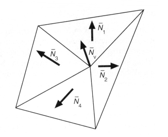
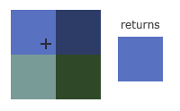
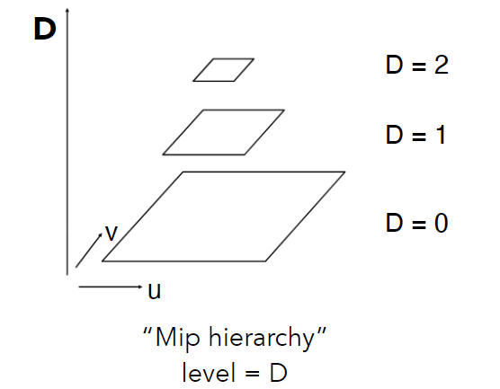
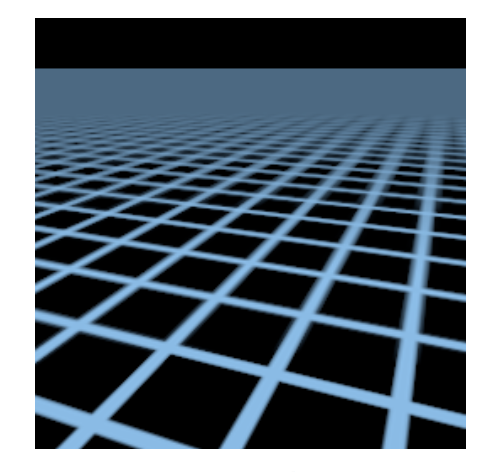
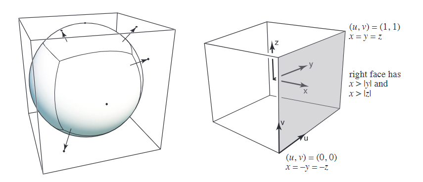

——在图片上引入明暗和颜色的不同。（一般定义）
——对不同的物体引入不同的材质。（图形学定义）
Blinn- Phong Reflectance Model
Blinn- Phong Reflectance Model只是经验模型，并不代表的实际的物理效果。
我们只考虑一个点的着色，不考虑阴影和点之间的影响。
需要定义：
- 观察向量 $\overrightarrow{v}$
- 表面法向量 $\overrightarrow{n}$
- 光源方向 $\overrightarrow{l}$
- 材料性质（颜色，材质 ）
漫反射（diffuse reflection）
漫反射，是投射在粗糙表面上的光向各个方向反射的现象。当一束平行的入射光线射到粗糙的表面时，表面会把光线向着四面八方反射，所以入射线虽然互相平行，由于各点的法线方向不一致，造成反射光线向不同的方向无规则地反射，这种反射称之为“漫反射”或“漫射”。这种反射的光称为漫射光。
光会向不同的方向均匀发射，与观察者无关。
兰伯特余弦定理（Lambert）
物体完全接受了光照：
物体旋转60°后，只接受了一半的光：
考虑一般情况，物体单位面积上接受光的比例为：
光照强度
考虑到一个点光源在空间中，向四周发射光。我们在空间中截取很多球面，不考虑能量衰减，那么每个球面的总能量是相同的。越往外球面单位面积上所能接受到的能量就越少。
记半径为1的单位球的单位面积上接受到能量为I，根据球的面积公式可以得到，距离点光源直径为R上的点，接受到的能量为$I’=\frac{I}{R^2}$。
推导如下：
假设总光照强度为E，有：

综上，我们可以得到漫反射能量公式：
- $k_d$ 漫反射率，有物体本身的性质决定，0代表黑色全吸收，1代表一点也不吸收能量。物体的颜色rgb三通道决定。
- $(I/r^2)$ 光照到达该点的能量。
- $max(0,\overrightarrow{n}\cdot\overrightarrow{l})$ 物体所接受的能量，由位置决定，取max是因为负的接受量没有实际意义。
高光（Specular Term ）
强度取决于观察方向。
如何判断镜面反射向量$\overrightarrow{R}$靠近观察向量$\overrightarrow{v}$？
使用半程向量$\overrightarrow{h}$（也就是灯源方向$\overrightarrow{l}$与观察向量$\overrightarrow{v}$的角平分线）
与漫反射类似，我们可以得到高光的强度公式：
- $k_s$ 一般是白色（高光一般就是白色）
- $(I/r^2)$ 光照到达该点的能量。
- $max(0,\overrightarrow{n}\cdot\overrightarrow{h})^p$ 高光强度，如果不取指数p，会发现高光太亮了（$\overrightarrow{n}\cdot\overrightarrow{h}$很小的情况下（夹角很大），就能看见很亮的高光，这样是不对的，$\overrightarrow{n}\cdot\overrightarrow{h}$很大（夹角很小）的情况下才应该看见高光）
环境光（Ambient Term）
没有光照射到的像素也不应该是黑色的，物体本身有自身的颜色。
- $k_a$ 环境系数
- $I_a$ 环境光强度
总结
将环境光、漫反射、高光加起来就是Blinn-Phong Reflection Model。
着色频率
着色应用在哪些点上？
逐面着色（flat shading）
三角形是平面，法向量唯一。
但对于光滑的面着色效果不好。
逐顶点着色（Gouraud shading）
如何确定一个顶点的法向量。
取顶点相邻面的法向量取平均。
三角形内部进行插值运算。

也可以对相邻面进行加权求和。权值是三角形的面积。
逐像素着色（Phong shading）
算出顶点的法向量，之后对中间的像素点的法向量进行插值运算。
总结
着色频率的效果与面数有很大的关系：
图形渲染管线（Real-time Rendering）
- 顶点处理（Vertex Processing），对输入的顶点数据进行model、view、projection变换。将三维顶点数据变换到二维屏幕坐标上。
- 三角形处理（Triangle Processing），对变换得到的点连成三角形面。
- 光栅化（Rasterization），确定三角形如何显示在像素上。
- 片段着色器（Fragment Processing），着色、深度测试，纹理映射。其中着色、纹理映射也可以在顶点处理中做。
- Framebuffer，将所有的像素颜色信息整合在一起，输送给显示设备加以显示。
Shader Programs
shader中每个像素都会执行相应的操作。
顶点操作 => vertex processing
像素操作 => fragment processing
这也是图形渲染管线中可编程的两个部分。
纹理映射
3D图形的表面是2D图像。

假设已知3D三角形到2D中三角形中顶点坐标的映射关系。
3D三角形中每个顶点都对应纹理坐标中一个u,v。
三角形的重心坐标（Barycentric Coordinates）
我们在顶点做运算（纹理坐标、颜色，法向量等…….），三角形内部的值就需要根据顶点的值做插值运算。
做插值运算，比较方便的方式就是使用重心坐标。
三角形内的任意一点（x,y）都能使用三个顶点的坐标线性表示。
其中$(\alpha,\beta,\gamma)$就是点的重心坐标。
比如顶点A,有：
因此顶点A的重心坐标(1,0,0)。
如果要保证顶点在三角形内部，$\alpha、\beta 、\gamma$都必须是非负的。否则只能保证点在三角形所在平面内。
推导
通过面积进行推导：
除了上面的定义，我们还有一种几何观点。
对三角形内任意一点（x,y），我们可以把三角形分成三个小三角形。
通过顶点对面的三角形面积比定义$\alpha、\beta 、\gamma$。
何为一个顶点对面的三角形，就是点不相邻的三角形，比如顶点A对面的三角形就是$\triangle A_A$。
综上，可以得到定义：
接下来的问题是，知道三角形的三个顶点坐标，如何求三角形的面积。
二维向量的叉乘公式：
a点(x1,y1)，b点(x2,y2):
现在推导$\alpha$的表达式,记三角形内某点为D(x,y)：
同理可得$\beta$值，综上，三角形内任意一点D(x,y)的重心坐标为：
总结
重心坐标的应用是对三角形进行插值运算。
$V_A、V_C、V_C$可以代表顶点的各种属性(纹理坐标、颜色，法向量等…….),那么三角形中任意一点V的属性值为：
再利用重心坐标进行插值的时候，投影到屏幕前后所计算出的重心坐标不一样，因此我们需要在3D空间中进行重心坐标插值再投影。当然也可以在二维屏幕空间进行透视矫正的重心坐标插值。
应用纹理
1 | 对屏幕中的每个像素(x,y)#(x,y)是像素中心坐标： |
纹理放大（Texture Magnification ）
纹理过小
—— 纹理过小（纹理分辨率不够）
想想我们把一张100x100的纹理贴图应用在一500x500的屏幕之上必然会导致走样失真，因为屏幕空间的几个像素点对应在纹理贴图的坐标上都是集中在一个像素大小之内。那么如果仅仅是使用对应(u,v)坐标在texture贴图下最近的那个像素点，往往会造成严重的走样。

邻近过滤 (Nearest)
如果我们对屏幕坐标(x,y)映射到纹理坐标(u,v)不做处理，会发生多个屏幕坐标(x,y)映射到一个纹理坐标(u,v)的情况。
Nearest就是用映射完坐标后最接近映射的纹理坐标的那个纹理颜色。

双线性插值（Bilinear）
黑色点为纹理坐标点，红点为屏幕像素采样纹理坐标点。
一维线性插值：

有ABC三个点，C点在AB之间，根据长度我们设$\frac{AC}{AB}=x$，x的范围为0~1，那么当我们知道AB的属性（例如颜色，法线等）时，C点对应的属性即为：
取出离红色点最近的4个黑色顶点，分别算出，该红色点在水平及竖直方向偏移的比率s,t，图示如下:

接着先利用s，可以线性插值出如下图所示的u0，u1点的颜色值
采样点的颜色为：
双三次插值算法（Bicubic）
取周围16个像素，每次对4个像素进行三次插值。
纹理过大
近处锯齿！远处摩尔纹！非常严重的走样现象。
地板上铺满了重复的方格贴图，根据近大远小，远处的一张完整的贴图可能在屏幕空间中仅仅是几个像素的大小，那么必然屏幕空间的一个像素对应了纹理贴图上的一片范围的点，这其实就是纹理过大所导致的，直观来说想用一个点采样的结果代替纹理空间一片范围的颜色信息，必然会导致严重失真！(从信号的角度来说就是，采样频率过低无法还原信号原貌)。
从纹理图来看，我们的格子其实都是一样大小的，也就是说每个格子所占的纹理像素是一样多的。但是因为透视投影的近大远小效果，我们近处格子看起来会很大，也就是说会有很多的屏幕像素来显示一个格子，那不就导致多个屏幕像素会对应到一个纹理像素了么，也就是我们前面所说的模糊问题。而在远处就恰恰相反了，用极少的像素显示一个甚至多个格子，也就是说我们一个屏幕像素会对应到多个纹理像素，这就产生了摩尔纹（摩尔纹属于欠采样所造成的，即我们很多纹理像素缺只采样了其中一个像素的值，我们只需要利用MSAA的原理，即在一个像素内增加采样点，然后求个平均，来反走样）。
因此我们可以说近处纹理过小，远处纹理过大。
想象一下纹理贴图大小500x500，屏幕空间100x100，将屏幕空间的像素点均匀分布在纹理空间之中，那么1个屏幕空间像素点所占的平均大小就是5x5=25个纹理空间像素，因此这就是纹理过大所导致的结果)
Mipmap
—— 一张图生成一些列图。
通过超采样的方法效率太低，如果我们知道像素覆盖的纹理范围后能马上知道像素的颜色就好了，这就要引入Mipmap技术。
Mipmap 是快速的、近似的、正方形的范围查询。
每张图是上一张的一半大小（指的分辨率）。
每组Mipmap多占用了$\frac{1}{3}$的存储空间：
假设存储3倍的Mipmap,L0级的大小为x，最终会填充出一个x的大小的格子。
Mipmap组成一个图像金字塔。

如何确定一个像素对应的Mipmap等级？
——求出该像素对应的纹理范围在第几层Mipmap会对应一个纹理像素。
假设我们要求下面粉色像素$(u，v)_{00}$所对应的Mipmap等级。
取该粉色像素的上面$(u，v)_{01}$和右面$(u，v)_{10}$的像素，查看三个像素在纹理坐标下的距离，取较大的距离记为L。
在$(u，v)_{00}$取边长为L的正方形，就是$(u，v)_{00}$所对应的纹理坐标范围。
假设L在L0的Mipmap对应2个像素，那么该像素就会在L1的Mipmap上对应1个像素。
假设L在L0的Mipmap对应4个像素，那么该像素就会在L1的Mipmap上对应2个像素。在L2的Mipmap上对应1个像素。
如果L对应的不是2的幂次方像素，那么就可能对应L1.6层的Mipmap这种情况，在这种情况下，我们需要在层之间进行插值。
在L(D)层进行双线性插值，在L(D+1)进行双线性插值，再在层之间进行一次线性插值，得到非整数层的Mipmap属性值。
Mipmap的结果：

会发现远处十分模糊，因为Mipmap只能近似正方形。
各向异性过滤（Anisotropic Filtering）

横行，固定高度，只对宽度取半。
竖列，固定宽度，只对高度取半。
Mipmap是对角线。
开销是原图的3倍。
各向异性对矩形区域处理的比较好，对于Mipmap只能处理正方形是一个进步。
但对斜条形处理不好，可以用EWA filtering。
环境贴图（Environment Map）
将环境光存贮在一个球体中（Spherical Map）：
存储在球体中会产生一些问题
会发现图像的上部和下部会产生扭曲。
因此，会用正方体保存环境光（Cube Map）：
假设用一个包围盒将球体包裹，延球心到球面像素点的方向，将球面的像素打在正方体上。


凹凸贴图（Bump mapping）
也叫法线贴图（Normal mapping）。
用纹理存储法向量的相关信息。或者用纹理存储点的高度信息。并不是用纹理存储颜色。
凹凸贴图只是虚拟的（从逻辑上）改变点的高度，从而改变了法向量。实际上物体的几何形体并没有发生变化。

黑线是实际的物体几何表面，黄线是虚拟的，是凹凸贴图所认为的物体表面。
位移贴图（Displacement mapping）会真实地改变物体的几何表面。
3D纹理
球的内部也有纹理，表面的图案可以通过噪声函数生成，空间中的每一个点(x,y,z)都对应一个颜色。